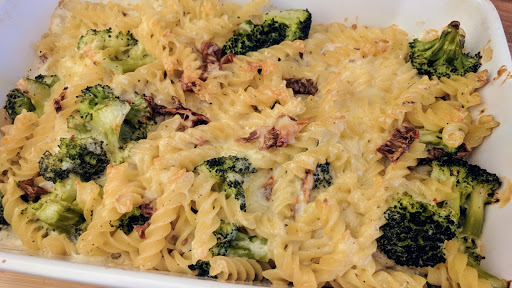

Salmon and broccoli pasta bake
The perfect dish for a spoil-yourself Saturday night supper - it's easy to cook, tastes really special and only needs a simple salad to go with it.
Ingredients
- 250 g penne
- 300 g broccoli florets
- 25 g butter
- 25 g plain flour
- 600 ml milk
- 100 g mascarpone cheese
- 6 sun-dried tomatoes in oil, drained and thickly sliced
- 10 large fresh basil leaves, roughly torn
- 4 fresh salmon fillets, halved widthways
- 50 g mature cheddar cheese, finely grated
Instructions
- Preheat the oven to 170°C/Gas 5. Cook the pasta in salted boiling water for 6 minutes, add the broccoli and boil for another 4 minutes.
- Meanwhile, put the butter, flour and milk in a pan and simmer, whisking, to make a thick smooth sauce. Remove from the heat and stir in the mascarpone, tomatoes and basil.
- Drain the pasta and broccoli, mix with the sauce and season well. Put the salmon in a single layer in an oven proof dish, spoon the pasta mixture on top and scatter with the cheese. Bake for 30 minutes until golden.
Source
BBC Good Food: Pasta & Noodle DishesShort URL Long URL